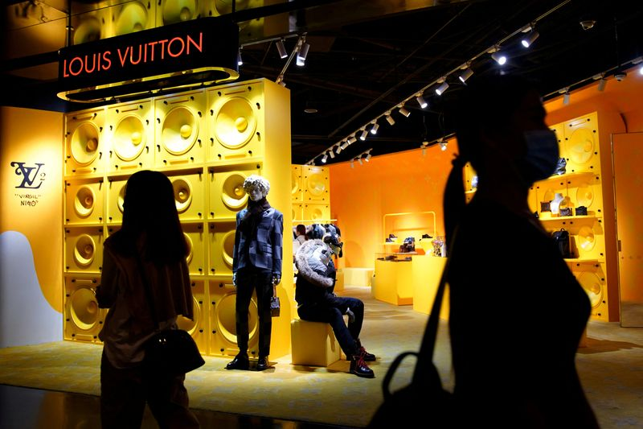

Higher prices and Gen Z help luxury to another good year
Read the original news here
Fears that the global slowdown might seriously dent the luxury market appear to be unfounded, according to a new report from Bain & Company and Altagamma. The latest in a series of deep dives into luxury, includes a forecast for this year that shows "personal, luxury goods, sales, still rebounding impressively, against the macroeconomic odds”
Bain said all categories have “thrived”, and 2022 sales should grow at about 95% of brands. South Korea and Southeast Asia have been “stellar” markets, while the US and Europe enjoyed “strong growth”.
And while growth has slowed, it's not been enough to change luxury’s overall growth trajectory. For instance, annual personal luxury goods growth at actual exchange rates from 2019 to the end of this year should average 26% (or 22% at constant exchange rates). But for 2022 alone, the forecast is for growth of 'only' 22%, or 15% at constant exchange rates.
Bain expects the year to end with the market adding up to a value of €353 billion. That's understandably much higher than the €290 billion of a year ago and 2020's pandemic-hit €220 billion. But importantly, it's significantly higher than the €281 billion of pre-pandemic 2019.
Inflation has to be taken into account, of course. Around 60% of the growth has been driven by price increases in key items such as handbags. But the difference between the pre-Covid figure and today is more than it would have been had inflation been the only growth factor.
Not that everything is perfect. The key mainland Chinese market has remained constrained by Covid-19 lockdowns. Its Q4 performance will influence the global figure, but Bain expects China to recover next year.
RESILIENCE AND THE ULTRA-LUXE SHOPPER
The analysis noted that, even with a possible 2023 global recession, the impact could be different from that of the 2008/09 global financial crisis.
“The luxury market appears better equipped to cope with economic turbulence with its consumer base both larger and more concentrated, and customer-centricity and a multi-touchpoint ecosystem set to provide resiliency amid disruptions,” the report said.
Bain forecasts 2023 growth of 3%-8%. That’s less buoyant than 2022, but it’s still respectable in the circumstances. The final figure will depend on the strength of the Chinese recovery and the ability of the US and Europe to withstand economic headwinds
The forecast comes as the big names of luxury fashion and accessories (LVMH, Kering, Hermès and Richemont) have been reporting largely strong sales.
Part of the strength of these groups and the wider sector has been down to an increasing focus on the ultra-luxury shopper. And as big huge price rises (higher than the wider rate of inflation) illustrate, that's a strategy that seems to be paying off.
Ultra-wealthy individuals may lose money on stock market investments and in other areas, but seeing investments falling from, say, €10 million to €8 million, doesn't necessarily crimp the ability to buy luxury handbags.
The top 2% of spenders now account for 40% of the segment’s sales, up from 35% in 2009. And their importance is clear from the major effort that luxury brands, stores and platforms make to reach out to these ‘EIPs’ (extremely important people).
Another factor that has boosted the market. This year, is that savings built up during the pandemic (which add up to around €3 trillion globally) have also been unleashed.
And the rise of ‘new’ luxury markets could be key. Bain said that “while there will not be ‘another China' to drive a huge influx in spending, people becoming wealthier in regions including India, South Korea and Mexico will lead to about 10 million new luxury consumers per year” in the near future.
GEN Z START EARLY
Young shoppers will also play a significant role with Generation Z — born between 1997 and 2012 — expected to account for about a third of luxury purchases by the end of the decade.
It’s interesting that “these young shoppers are entering the market earlier than their millennial predecessors, buying their first luxury goods at around age 15 versus 18 to 20, which Bain attributes to brands’ strong digital communications strategies and the expansion of product categories, such as trainers and casualwear, relevant to teenagers”.
And in a key development that also reflects the power of brands to understand their consumers, unlike previous generations who tended to reject the brands favoured by their parents, “young entrants like the same luxury brands that older buyers do — which is more good news for sector leaders”.